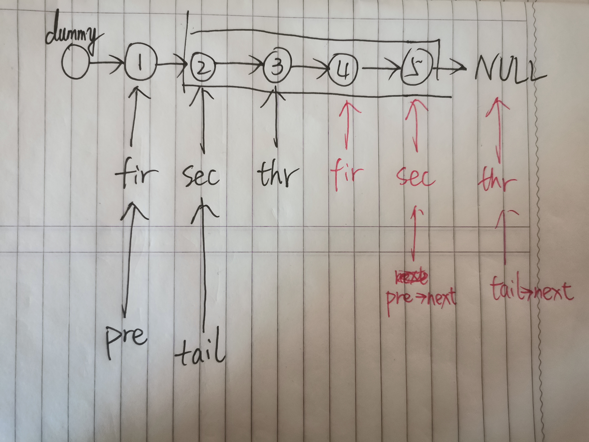
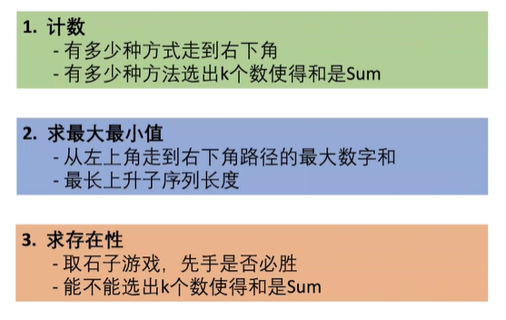
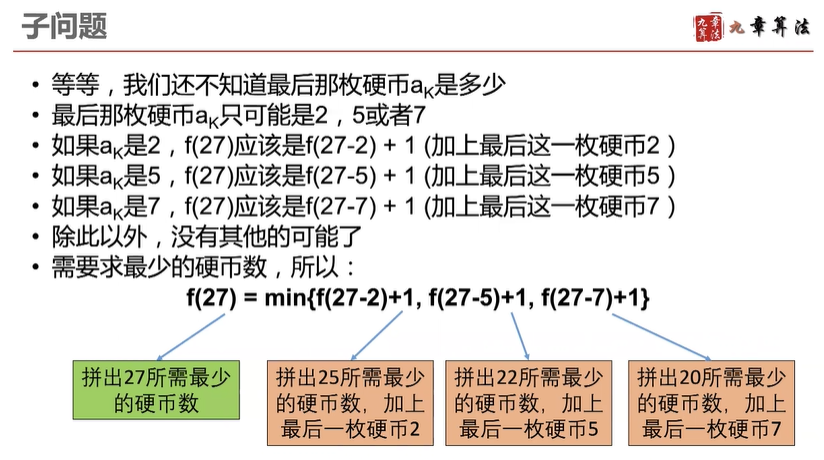
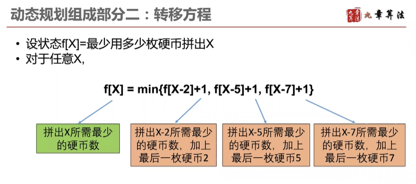
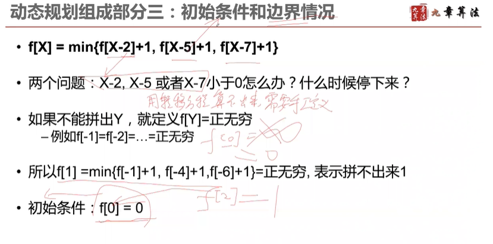
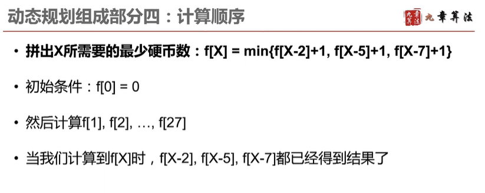
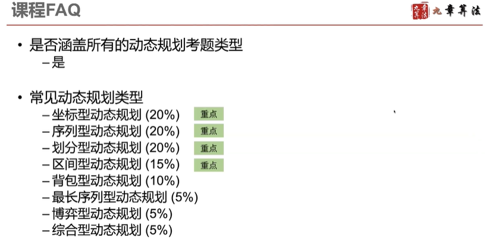
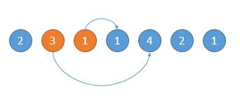
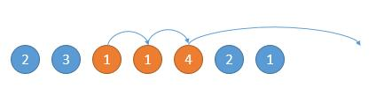

刷题顺序参考如下：https://leetcode-cn.com/circle/article/48kq9d/
目录
链表相关
数组相关
动态规划相关
链表相关
难点在于如何处理头节点。解决方法是添加一个哨兵节点(dummy node)。
1 2 3 4 5 6 7 8 9 10 11 12 13 14 15 16 17 18 19 20 21 22 23 ListNode* removeElements (ListNode* head, int val) {if (!head)return NULL ;new ListNode ();while (cur){nullptr ;if (cur->val == val){delete temp;if (temp)continue ;delete newhead;return temp;
算法思路
这道题函数中只有一个节点，要求删除该节点。（没有给出头节点）
一道简单的脑筋急转弯。由于题目强调了绝对不会删除掉尾节点，只需把下一个节点的元素赋给node，删除掉下一个节点即可。
代码实现
1 2 3 4 5 6 void deleteNode (ListNode* node)
注意 ：在实现的过程中还是出现了问题，上面注释掉的代码，为什么不正确？
下面这篇文章讲的很好，c++的指针类型分为静态分配和动态分配。
delete只能用于释放堆指针，也就是new出来的指针，而不能用于栈指针。
如果在deleteNode前在使用c节点本身，那就可能引发不确定行为。
由于ListNode是个单链表节点，而单链表节点本质上是无法做到在链表里删除自身的，所以这题只能通过这种替换的方式来伪造删除了节点。
这题会误导很多开发者，这题的设计模式更是不可取！
个人认为这题应该删除
而203. 移除链表元素这题才是真正的移除链表元素！
作者：AmazingPP
链接：https://leetcode-cn.com/problems/delete-node-in-a-linked-list/solution/tong-pi-ci-ti-li-ying-shan-chu-yin-chu-c-taij/
来源：力扣（LeetCode）
著作权归作者所有。商业转载请联系作者获得授权，非商业转载请注明出处。
算法思路
方法一：暴力法
1. 遍历一遍，获取链表的长度
2. 再循环L-n-1次，获取目标结点的前一个结点。方法二：快慢指针法（只需遍历一遍）
代码实现
1 2 3 4 5 6 7 8 9 10 11 12 13 14 15 16 17 ListNode* removeNthFromEnd (ListNode* head, int n) {new ListNode ();for (int i = 0 ; i < n; i ++){while (fast->next){delete temp;return dummynode->next;
题目要求
1
变化为
2
算法思路
DFS（事实上，歪着脖子看，就是二叉树的前序遍历）将结点存入数组中
遍历数组，从新连接结点
代码实现
1 2 3 4 5 6 7 8 9 10 11 12 13 14 15 16 17 18 19 20 class Solution {public :void dfs (Node* head) if (!head)return ;push_back (head);dfs (head->child);dfs (head->next);Node* flatten (Node* head) {dfs (head);int size = arr.size ();for (int i = 0 ; i < size; i++){if (i+1 < size) arr[i]->next = arr[i+1 ];if (i>0 ) arr[i]->prev = arr[i-1 ];NULL ;return head;
因为前两天学习到很多方法，所以今天的题目都能很快完成
算法思路
迭代法（三指针）
1 2 3 4 5 6 7 8 9 10 11 12 13 14 15 16 17 18 class Solution {public :ListNode* reverseList (ListNode* head) {new ListNode (0 ,head);if (dummynode->next == NULL || dummynode->next->next == NULL )return head;NULL ;while (1 ){if (tail == NULL )break ;return mid;
递归法
1 2 3 4 5 6 7 8 9 10 11 12 13 class Solution {public :ListNode* reverseList (ListNode* head) {if (!head || !head->next) {return head;reverseList (head->next);NULL ;return newHead;
算法思路
该题难点在于要求一次遍历，需要理清变量的位置。
哨兵节点：dummynode
反转链表需要三个变量：fir、sec、thr
确定反转后的头和尾需要两个变量：pre、tail

3
代码实现
1 2 3 4 5 6 7 8 9 10 11 12 13 14 15 16 17 18 19 20 21 22 23 24 25 26 27 28 29 30 31 32 33 34 35 36 class Solution {public :ListNode* reverseBetween (ListNode* head, int m, int n) {if (!head)return NULL ;if (!head->next)return head;if (m == n)return head;new ListNode (0 ,head);while (thr){if (m == 1 )break ;while (thr){if (n == 1 )break ;return dummynode->next;
算法思路
遍历一遍链表，获得链表长度cnt，根据cnt分割出每段len
用三指针进行反转
与上题类似。可以继续沿用上题的我画的图
！！！注意注意！！！ 花了半个小时debug，问题在于
fir = tail;反转一段链表后，需要更新fir为tail
代码实现
1 2 3 4 5 6 7 8 9 10 11 12 13 14 15 16 17 18 19 20 21 22 23 24 25 26 27 28 29 30 31 32 33 34 35 36 37 class Solution {public :ListNode* reverseKGroup (ListNode* head, int k) {if (!head)return NULL ;if (!head->next)return head;new ListNode (0 ,head);int cnt = 0 ;while (cur){int len = cnt/k;for (int i = 0 ; i < len; i ++){for (int j = 0 ; j < k; j ++){if (thr == NULL ) thr = NULL ;else thr = thr->next;return dummynode->next;
思考： 如何只用一次遍历。太累了，以后再解决吧。
算法思路
由于需要逆序处理链表，从个位开始相加，所以可以考虑使用栈
引入一个carry变量作为进位
代码实现
1 2 3 4 5 6 7 8 9 10 11 12 13 14 15 16 17 18 19 20 21 22 23 24 25 26 27 28 29 30 31 32 33 34 35 36 37 38 39 40 41 42 class Solution {public :ListNode* addTwoNumbers (ListNode* l1, ListNode* l2) {int > s1;int > s2;while (cur){push (cur->val);while (cur){push (cur->val);NULL ;int carry = 0 ;while (!s1.empty ()|| !s2.empty () || carry){int left = 0 ;int right = 0 ;if (!s1.empty ()){top ();pop () ;if (!s2.empty ()){top ();pop ();int newval = left+right+carry;10 ;10 ;new ListNode (newval);return ans;
算法思路一、
一种想法是将所有结点打散，存在一个优先队列中。但是耗时较长
image-20210126192802293
但是，可以直接的考虑应该是每次取出各个链表的第一个元素，放入优先队列。
学习优先队列的使用方法，熟悉for(auto node : lists){}这种遍历方式。
1 2 3 4 5 6 7 8 9 10 11 12 13 14 15 16 17 18 19 20 21 22 23 24 25 class Solution {struct Status {int val;bool operator < (const Status &rhs) const {return val > rhs.val;public :ListNode* mergeKLists (vector<ListNode*>& lists) {for (auto node: lists) {if (node) q.push ({node->val, node});new ListNode (0 );while (!q.empty ()) {auto front = q.top (); q.pop ();if (front.ptr->next) q.push ({front.ptr->next->val, front.ptr->next});return dummynode->next;
算法思路二、
分治合并。
img
需要两个函数：1.用于合并两个链表；2.分治递归
1 2 3 4 5 6 7 8 9 10 11 12 13 14 15 16 17 18 19 20 21 22 23 24 25 26 27 28 29 30 31 32 33 34 35 36 37 38 39 class Solution {public :ListNode* merge2Lists (ListNode* l1, ListNode* l2) {if (!l1 && !l2)return NULL ;if (!l1 )return l2;if (!l2) return l1;new ListNode (0 );while (cur1 && cur2){if (cur1->val < cur2->val){new ListNode (cur1->val);else if (cur1->val >= cur2->val){new ListNode (cur2->val);return dummynode->next;ListNode* fun (vector<ListNode*>& lists, int left, int right) {int mid = (left + right)/2 ;if (left == right)return lists[left];if (left > right)return NULL ;merge2Lists (fun (lists, left, mid),fun (lists, mid+1 , right));return ans;ListNode* mergeKLists (vector<ListNode*>& lists) {return fun (lists, 0 , lists.size ()-1 );
链表暂告一段落......
数组相关
https://leetcode-cn.com/problems/set-mismatch/solution/cyi-huo-fa-xiang-jie-by-feng-feng-19/
算法思路
构建一个unordered_map<int,pair<int,int>>，其中pair包含数据出现次数与数据第一次出现的坐标
动态规划相关

image-20210203195708610
动态规划组成部分：
确定状态：最后一步和子问题

image-20210203200248268
转移方程

image-20210203200631362
初始条件和边界情况

image-20210203201010114
计算顺序（递归：自顶向下，动态规划：自底向上）

image-20210203201219009

image-20210203203659002
算法思路
要输出二进制数的‘1’的个数，只需要考虑两种情况：
奇数：\(f(i) = f(i-1)+1\)
偶数：\(f(i) = f(i/2)\)
代码实现
1 2 3 4 5 6 7 8 9 10 11 12 13 14 15 16 class Solution {public :vector<int > countBits (int num) {int > ans;if (num >= 0 )ans.push_back (0 );if (num >= 1 )ans.push_back (1 );for (int i = 2 ; i <= num; i ++){if (i%2 == 1 ){push_back (ans[i-1 ]+1 );else {push_back (ans[i/2 ]);return ans;
第一种思路使用动态规划：
另开数组记录每一个位置的步数，然后\(f(x) =
min({f(0),f(1),...f(x-1)})+1\)
时间复杂度为\(O(n^2)\)
第二种思路，从后往前
最坏时间复杂度也为\(O(n^2)\) ，超出时间
1 2 3 4 5 6 7 8 9 10 11 12 13 14 15 16 17 class Solution {public :int jump (vector<int >& nums) int pos = nums.size ()-1 ;int ans = 0 ;while (pos!=0 ){for (int i = 0 ; i < pos; i ++){if (nums[i]+i >= pos){break ;return ans;
第三种思路，贪心算法
时间复杂度为\(O(n)\)
在2的后面的两个数之中，找出一个能到达最远位置的数

在3的后面的三个数之中，找出一个能到达最远位置的数

1 2 3 4 5 6 7 8 9 10 11 12 13 14 15 16 class Solution {public :int jump (vector<int >& nums) int ans = 0 ;int end = 0 ;int maxpos = 0 ;for (int i = 0 ; i < nums.size ()-1 ; i ++){max (maxpos,nums[i]+i);if (i == end){return ans;
算法思路
转移方程：\(f(i) =
max(f(i-1),f(i-2)+nums[i])\)
代码实现
1 2 3 4 5 6 7 8 9 10 11 12 13 14 15 class Solution {public :int rob (vector<int >& nums) if (nums.size () == 0 )return 0 ;int size = nums.size ();int arr[size];if (size >= 1 )arr[0 ] = nums[0 ];if (size >= 2 )arr[1 ] = max (nums[0 ],nums[1 ]);for (int i = 2 ; i < size; i ++){max (arr[i-1 ],arr[i-2 ]+nums[i]);return arr[size-1 ];
优化方案：发现可将上面的arr和nums合并为一个数组
1 2 3 4 5 6 7 8 9 10 11 12 class Solution {public :int rob (vector<int >& nums) if (nums.size () == 0 )return 0 ;if (nums.size () >= 2 )nums[1 ] = max (nums[0 ],nums[1 ]);for (int i = 2 ; i < nums.size (); i ++){max (nums[i-1 ],nums[i-2 ]+nums[i]);return nums[nums.size ()-1 ];
算法思路
分为两种情况：（1）算头不算尾；（2）算尾不算头
在上述两种情况下，进行“打家劫舍”的操作
代码实现
1 2 3 4 5 6 7 8 9 10 11 12 13 14 15 16 17 int first_rob (vector<int > & nums) if (nums.size () >= 2 )nums[1 ] = max (nums[0 ],nums[1 ]);for (int i = 2 ; i < nums.size (); i ++){max (nums[i-1 ], nums[i-2 ]+nums[i]);return nums[nums.size ()-1 ];int rob (vector<int >& nums) if (nums.size ()==0 )return 0 ;if (nums.size () == 1 )return nums[0 ];int >::const_iterator head = nums.begin ();int >::const_iterator tail = nums.begin ()+nums.size ();vector<int > x (head+1 , tail) ;vector<int > y (head, tail-1 ) ;return max (first_rob (x), first_rob (y));
算法思路：DP
寻找最大的因子j
状态转移方程为\(f(i) = f(j) +
i/j\)
该算法效率不高，因为额外计算了很多不必要的量 ，最坏情况时间复杂度为\(O(n^2)\)
代码实现
1 2 3 4 5 6 7 8 9 10 11 12 13 14 15 16 int minSteps (int n) int arr[n+1 ];if (n >= 0 )arr[0 ] = 0 ;if (n >= 1 )arr[1 ] = 0 ;if (n >= 2 )arr[2 ] = 2 ;for (int i = 3 ; i <= n; i ++){for (int j = i/2 +1 ; j >0 ; j --){if (i%j == 0 ){break ;return arr[n];
算法思路二：递归法
代码实现
1 2 3 4 5 6 7 8 9 10 11 12 13 class Solution {public :int minSteps (int n) if (n == 1 )return 0 ;for (int i = n/2 ; i > 1 ; i--){if (n%i == 0 ){ return minSteps (i)+n/i; return n;